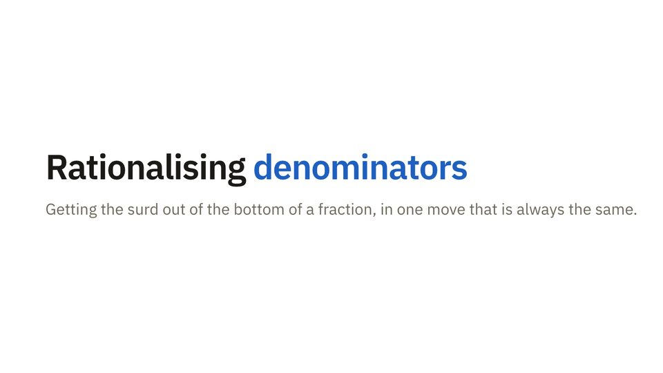

1.5Surds
Exact answers with roots in them, and how to simplify them without a calculator.
In this lesson
Recap
- 1\( \sqrt{ab} = \sqrt{a}\sqrt{b} \) and \( \sqrt{a}\sqrt{a} = a \). Nothing splits over a plus.
- 2Simplify by pulling out the largest square factor. Check what is left.
- 3Multiples of the same surd are like terms. Different surds stay apart.
- 4With brackets, expand every product first, then simplify the roots.
